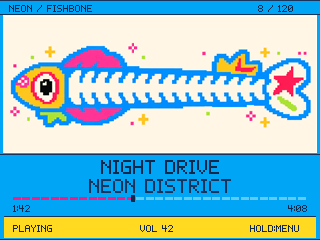

THE MODULE PROTOTYPE / UI ARCHIVE
A pocket player. Twenty personalities.
Try the original interactive concepts, then compare them with the archived firmware renders.
01 / 20
Neon Fishbone
Playback, songs, library, volume and seek

Static 320 × 240 output from the saved C++ firmware renderer. Use the interactive tab to try the earlier concept.
Try it
Pick a theme and use the buttons below its screen. Illustrated themes let you select sample songs, play/pause, seek and adjust volume. Other concepts have their own preview controls.
Keyboard shortcuts where supported: Space play, ↑ / ↓ wheel, ← / → tracks, Enter center, Esc library.
What this preview represents
These are the original HTML design concepts, not an ESP32 emulator. Sample tracks and signal animations are simulated; no music plays. The firmware tab shows the later implementation, including its menus. Controls, typography and animation can differ.
Hardware brightness, display calibration and decoded-audio analysis remain in the archived firmware. This demo does not change or flash a device.